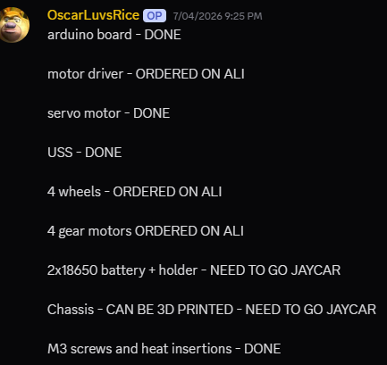
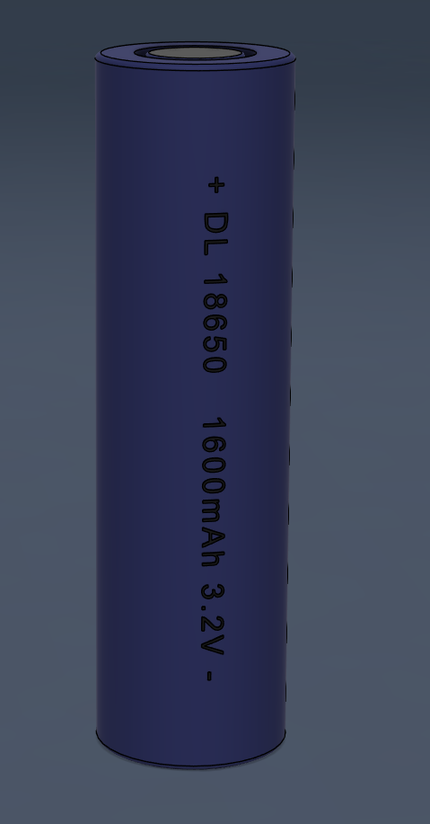
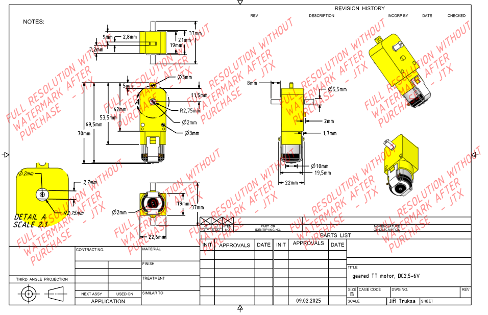
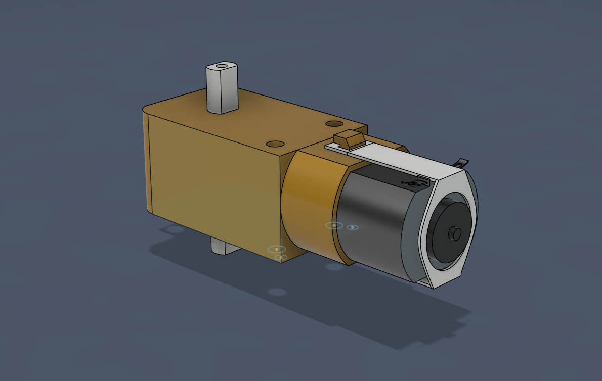
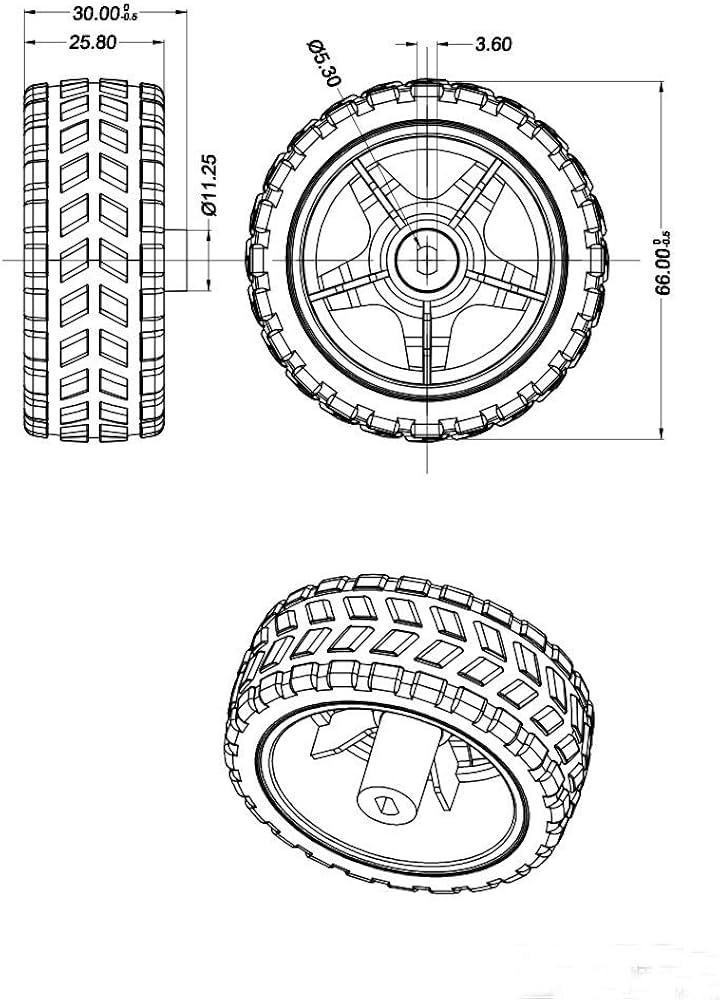
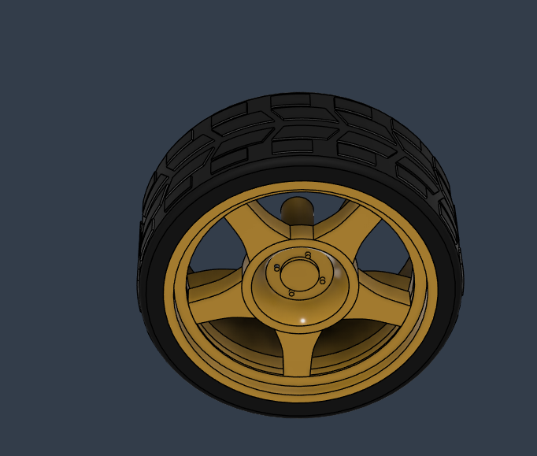
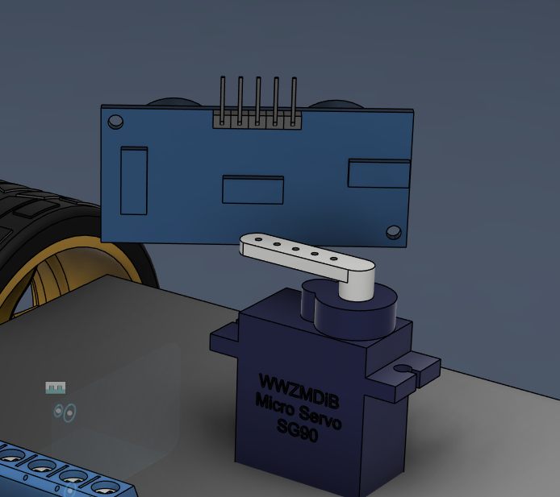
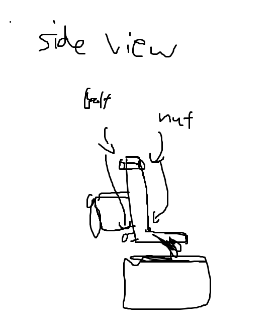
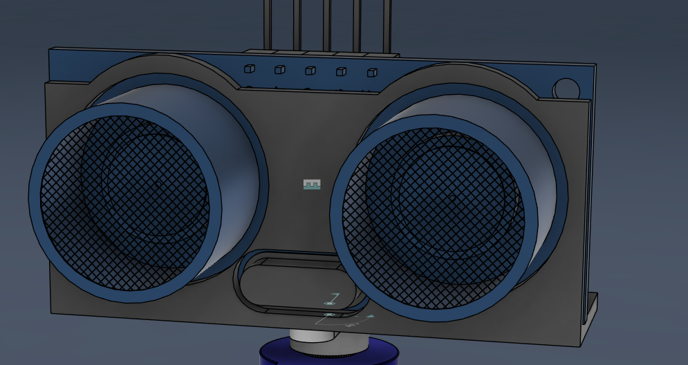
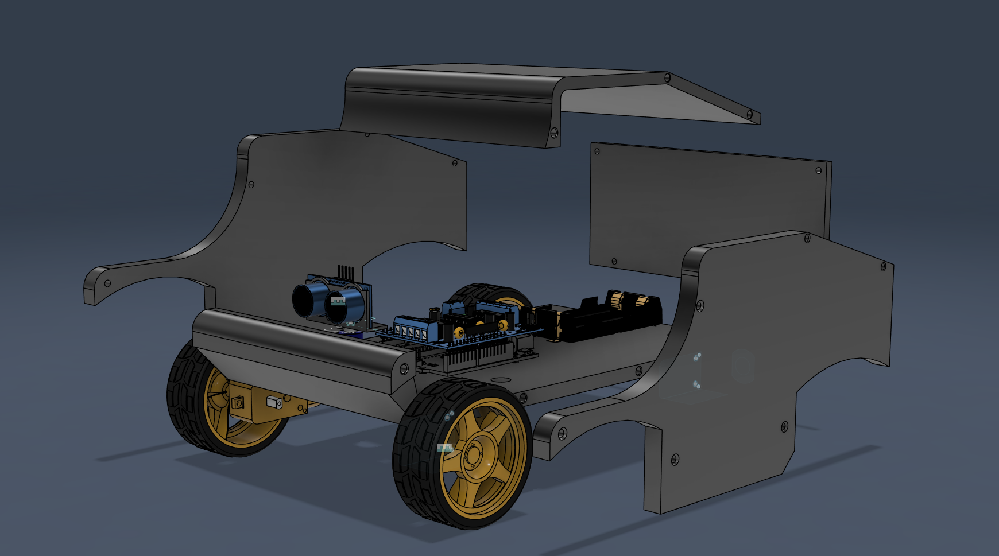

Project Scope & Component Sourcing
The goal of this project is to just get me introduced to Arduino IDE, an obstacle avoiding arduino car requires intro knowledge in mechanical, electrical and software so it was chosen as the project. After doing research on reddit and youtube, I made a list of things to pruchase
Shopping list

After that was done...
- It was time to move on to the next stage...
Visualing electronics.
Before designing the chassis striaght away, a good thing to do is to CAD out the electronics so you know the components you are dealing with. Doing so minimises problems that might be harder to solve in the later stages.
Here are my CAD designs





I attempted to CAD the servo as well and it was fine, but I ended up finding a model online instead as it was easier to use that for the problem I was about to face for the next stage. And obviously I didn't try to Cad the PCBs as that would be too time consuming and stupid, found them online instead.
After all of that we can officially start designing the chassis! But there exists this one problem...

Chassis Assembly & Custom Bracket Prints
In this stage there's two things to do, figure out how to mount USS onto servo and design the chassis



Fabrication Spec Registry
- Material: Light, high-density thermoplastic structure to keep weight metrics small.
- Front Nose Array: Designed and printed a custom press-fit bracket cluster holding the HC-SR04 eyes squarely onto the SG90 micro-servo gear shaft.
- Drivetrain Balance: Lower tier houses the battery array and dual geared wheels to establish a rock-solid center of gravity for stable rotational sliding maneuvers.
Firmware Pipeline & Range Check States
The code is structured as an interactive state routine written in C++. It constantly evaluates spatial feedback parameters before modifying active motor gate logic values.
Decision Logic Map
The main sequence monitors a continuous forward tracking thread. If an environmental boundary drops closer than 30 centimeters, a pause is flagged, motor loops cut out, the lookAround() routine runs diagnostic right/left sweeps, evaluates the max path gap variable, and spins the vehicle to clear the target.
Final Deployment & Environmental Trials
The build concluded with open field trials to verify boundary tracking calibration and assess runtime power draws over tight obstacle courses.
System Readiness Matrix
The vehicle navigates complicated paths without requiring any manual corrections or physical overrides. All mechatronic systems are fully operational.